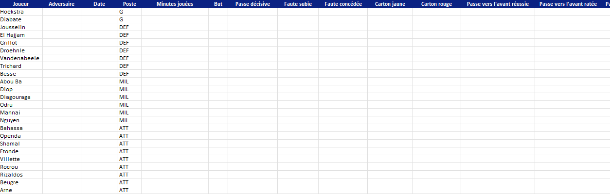
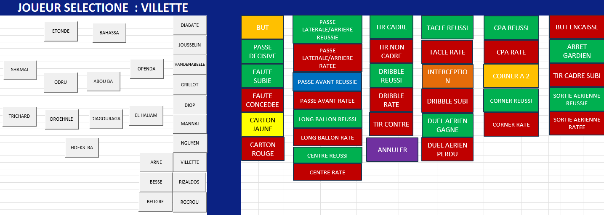
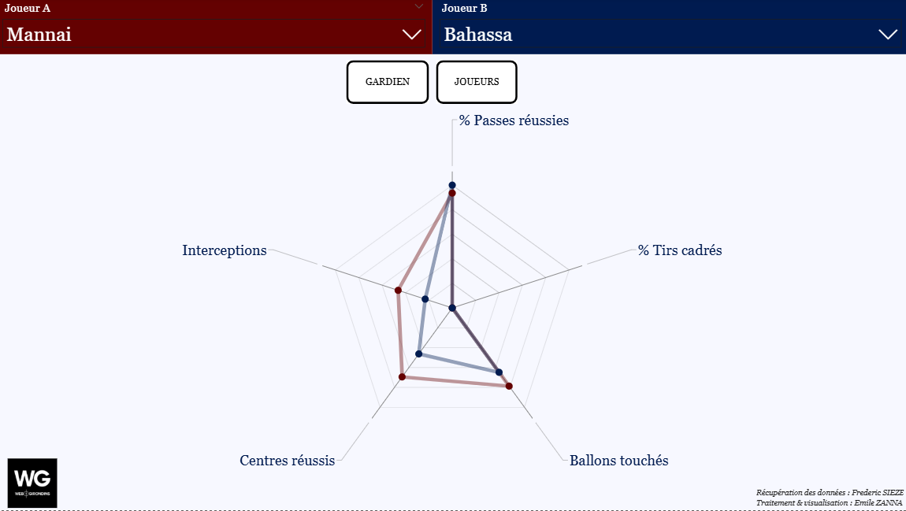
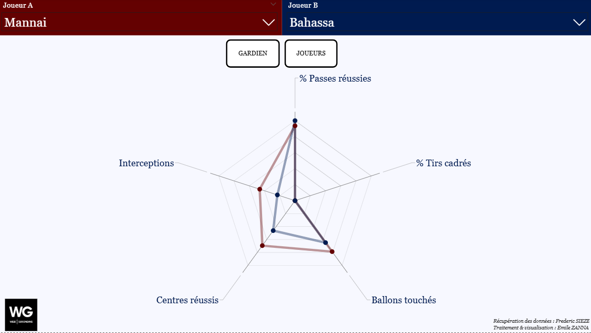

Process
1. Excel VBA - Live Data Collection
I built a user-friendly interface in Excel where the analyst selects a player and clicks on actions (goal, pass, interception, duel, etc.). Each click automatically increments the right stat in the database behind the scenes.
 2. Automated Data Structure
Every recorded action is structured into a dataset compatible with Power BI. This dataset creates a semi-automated pipeline from match event collection to visualization.
3. Power BI Visual Reporting
After each match, the analyst refreshes the Power BI report. The dashboard instantly updates match data, distributions, player performance indicators and comparisons.
 
